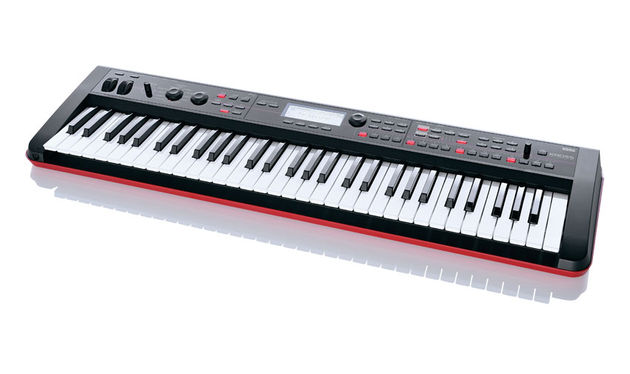

KORG KROSS-61

Описание товара
Мобильный клавишный синтезатор с впечатляющими возможностями
Характеристики товара
- Рабочая станция
- 61 клавиша
- 640 тембров (512 предварительно загруженных)
- 48 наборов ударных
Подробное описание товара
Синтезатор KROSS-61 создан для практичных музыкантов и сочетает исключительно богатые тембры, лучшие в своем классе, с фантастической мобильностью. Этот инструмент оборудован удобным микрофонным входом, встроенным аудиорекордером и может работать от 6 батареек формата АА. Это принципиально новый стандарт для музыкальных рабочих станций. Характеристики KROSS выгодно выделяют его на фоне конкурирующих моделей синтезаторов.
Ключевые особенности:
- Стильный и легко узнаваемый дизайн с эффектной черно-красной отделкой
- Исключительно легкий корпус — всего 4.3 кг (61-клавишная модель) или 12.4 кг (88-клавишная модель), плюс возможность питания от шести батареек формата АА
- Великолепные тембры рояля, электропиано и ударных
- Богатый выбор тембров (объем волновой памяти удвоен по сравнению с инструментами предыдущих поколений) для работы в самых разных музыкальных стилях
- Функция Sound Selector для быстрого поиска нужного тембра
- Функция Favorites для регистрации 64 избранных тембров или аудиофайлов для доступа с помощью нажатия всего на одну кнопку — незаменимая для живых выступлений
- Профессиональная система синтеза EDS-i, поддерживающая одновременное использование до 7 эффектов обработки
- Внешние входы, обеспечивающие возможность прямого подключения микрофона или других источников звука
- Функция Quick Layer/Split для оперативной перенастройки клавиатуры «на лету»
- Стереофонический аудиорекордер для записи (в том числе с наложением) исполнения на инструменте или вокала через микрофон
- Пошаговый секвенсор, заимствованный у приборов семейства Electribe, 16-дорожечный MIDI-секвенсор, трек ударных и арпеджиатор
- Подключение к компьютеру через порт USB для интеграции в звукозаписывающие программы в формате плагина
 © Все права защищены
© Все права защищены